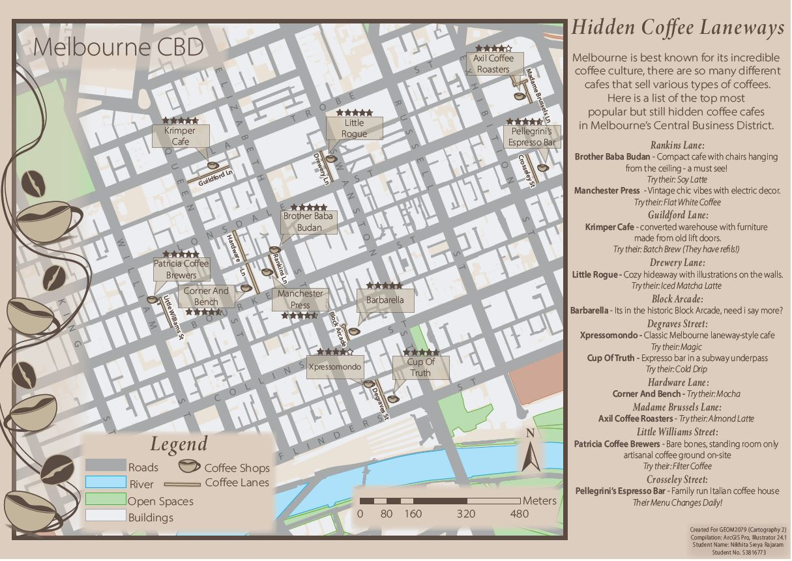
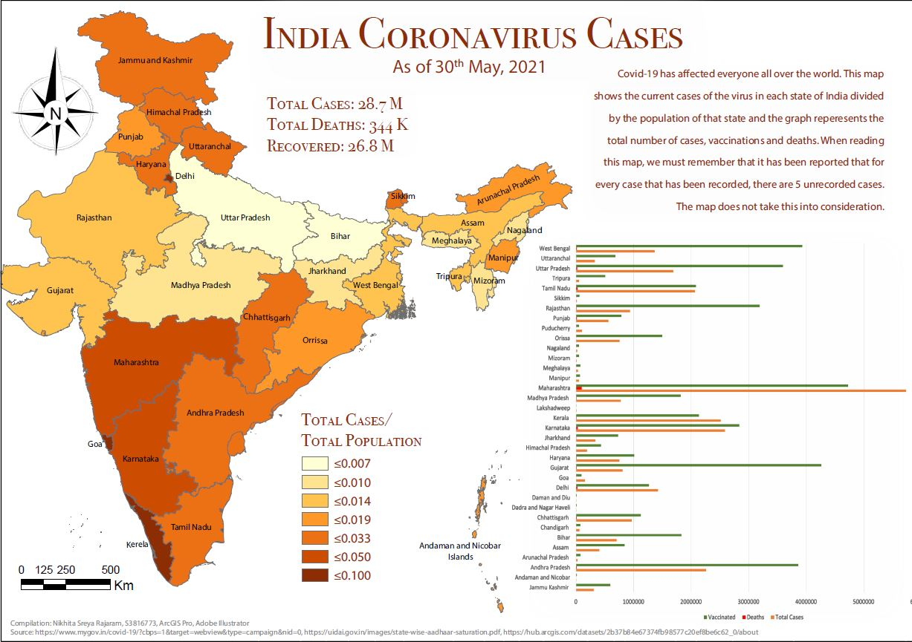

Skills
 |
GIS | QGIS | |
| Cartographic Principles |  |
Adobe Illustrator | |
| Remote Sensing | Photogrammetry and Drone Mapping | ||
 |
Web Design: HTML & CSS |  |
Web GIS |
| Python Programming |  |
SQL Database Management |
I’m currently pursuing a Bachelor's degree in Geospatial Science at RMIT University.
My knack for networking, effective communication, and building relationships allows me to connect with individuals from diverse backgrounds. Whether it's collaborating with fellow geospatial enthusiasts or any professional connections, I'm energized by the power of people. On top of that, my eye for design and passion for cartography have fueled my love for visual storytelling and map creation!
In addition to my academic pursuits, I serve as the Vice President of the Geospatial Science Student Association (GSSA) at RMIT. This leadership role has allowed me to foster a vibrant community, encouraging knowledge exchange and collaboration among geospatial enthusiasts.
Besides that, I have a deep interest and appreciation for different cultures and languages. It started with learning French at school and I’m currently learning Japanese. I’m fluent in English and Tamil, which is my mother tongue. I love travelling and I’m hoping to find an opportunity where I can travel and work while experiencing new cultures and traditions and getting the chance to network with a wide range of people.
Project Description
This map is designed for international visitors visiting Melbourne as a tourist. The map is going to be used when the tourist is there for a look around the sporting precinct, not for people going to any particular event but for general everyday tourists.

Project Description
Who is the map for?
This map is designed for tourists visiting Melbourne CBD for the first time/ people who don’t live in the CBD.
When will it be used?
Tourists that are looking for a good cup of coffee in one of Melbourne CBD laneways.

Project Description
This map is designed to show India's Coronavirus Cases
Apr 2022 - May 2023
My responsibilities were ensuring the accuracy and completeness of the data, as well as managing the storage and retrieval of the data. I've worked with large amounts of data.
I was involved with analysing the LiDAR and imagery data to identify defects such as vegetation growth, structural damage, or other hazards. Also developing and implementing processes and tools to identify defects accurately and efficiently. Additionally, I work collaboratively with other team members to deliver high-quality services to customers and continuously improving processes and workflows to increase efficiency and effectiveness. Also, I adhere to strict safety standards and compliance requirements, ensuring that the assets managed by Altavec are kept safe and secure at all times.
Nov 2022 - Present
The RMIT University Student Union (RUSU) is a multi-million dollar non for profit that advocates on students behalf, along with providing essential services to students and running events throughout the semester. I am one of 28 elected Student Representatives.
My main responsibilities includes representing the interests of students by attending monthly meetings and participating in debates and discussions. Collaborating with other members to come up with ideas and organise events, implement policies. Communicating with students through events to expand network. Advocating for and supporting students across all RMIT campuses. Supporting fellow council members with their duties.
|
GIS | QGIS | |
| Cartographic Principles | |
Adobe Illustrator | |
| Remote Sensing | Photogrammetry and Drone Mapping | ||
|
Web Design: HTML & CSS | |
Web GIS |
| Python Programming | |
SQL Database Management |